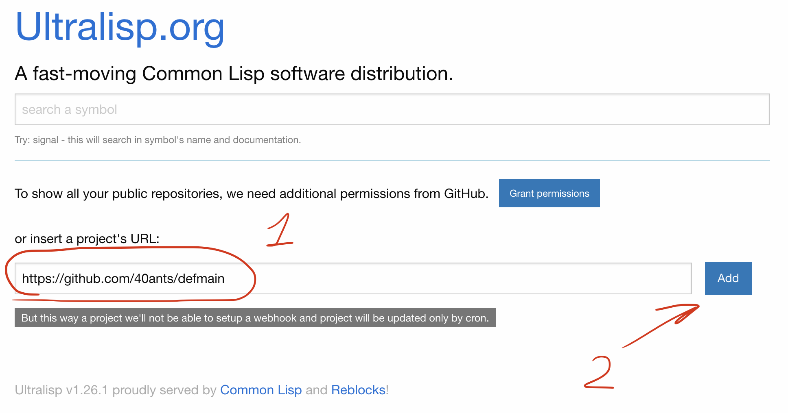
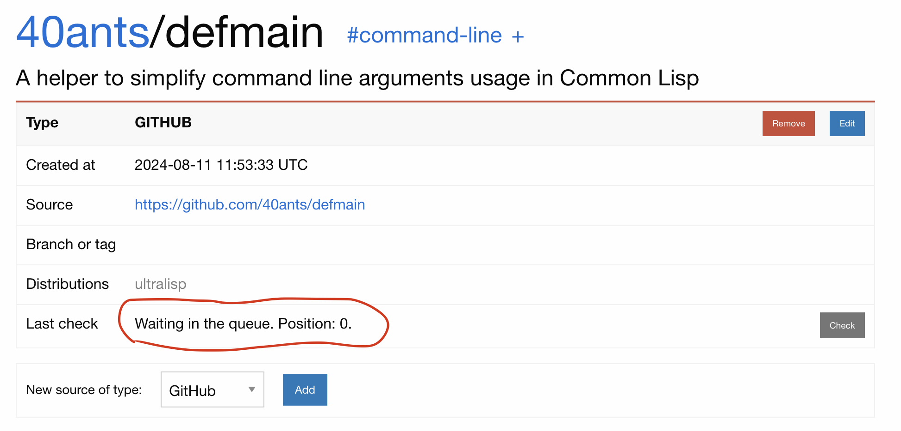
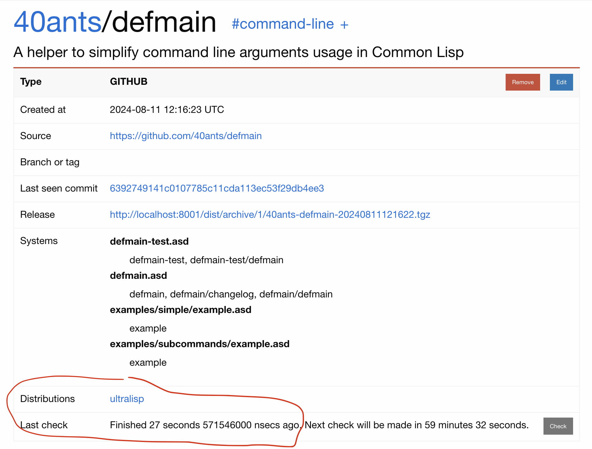
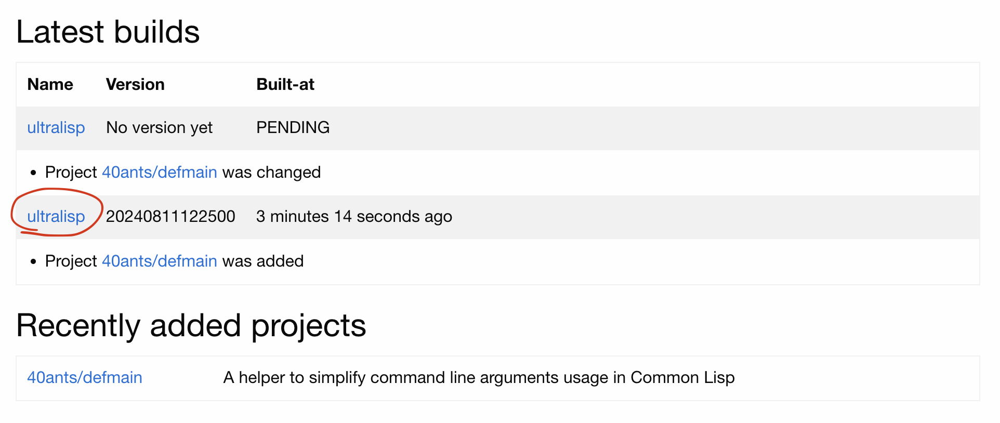
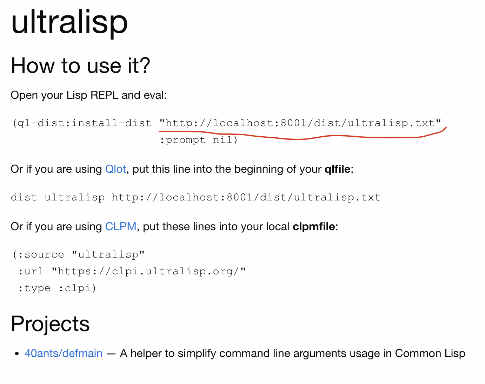

Development
Running in dev
Easy way
To run all components in docker containers, just run:
dev:~$ docker compose upIt will start 5 docker containers with names started with ultralisp_. Web application will be running on 8080 TCP port.
You can connect to the lisp parts of the Ultralisp using SLY:
MainApp is running on 14005
Worker is running on 14006
Other services are also export some ports. See the full list in the common-services.yml file.
Harder way
In hard mode we will build need componens manually. In this case you will have Roswell and Qlot installed on your machine. I know, somebody might tell me they don't want to use these tools too, but I'm too lazy to manage my Lisp installations manually and Qlot allows to make builds almost hermetic (at least in terms of lisp dependencies).
Database setup
by default, app tries to connect to the postgresql running on the same host to a database ultralisp as user ultralisp with password ultralisp. if there is no such database, it will quit.
let's install local postgres and create such database:
dev:~$ sudo apt-get install postgresql-14
dev:~$ sudo systemctl start postgresql
dev:~$ sudo su - postgres
postgres@dev:~$ createuser --interactive --pwprompt
Enter name of role to add: ultralisp
Enter password for new role:
Enter it again:
Shall the new role be a superuser? (y/n) n
Shall the new role be allowed to create databases? (y/n) n
Shall the new role be allowed to create more new roles? (y/n) n
postgres@dev:~$ createdb -o ultralisp ultralispNote: if you want, you can use another login, dbname and password. in this case you'll have to pass them to the webserver as postgres_host, postgres_user, postgres_pass, postgres_dbname environment variables.
now we need to fill the database with a schema:
dev:~$ qlot exec ros install mito
dev:~$ qlot exec .qlot/bin/mito \
migrate --type postgres \
--host localhost \
--database ultralisp \
--username ultralisp \
--password ultralispAlso, we need another user which read-only access to the database. It will be used in the worker process. This needed for security reasons, because worker loads untrusted code from the internet and it is unwise to give it an full access to the database. For the same reason, worker is running in the restricted Docker sandbox in production.
Enter this commands to create a read-only user:
dev:~$ sudo su - postgres
postgres@dev2:~$ createuser --interactive --pwprompt
Enter name of role to add: ultralisp_ro
Enter password for new role:
Enter it again:
Shall the new role be a superuser? (y/n) n
Shall the new role be allowed to create databases? (y/n) n
Shall the new role be allowed to create more new roles? (y/n) n
postgres@dev:~$ psql ultralisp
grant select on "source" to "ultralisp_ro";
grant select on "project" to "ultralisp_ro";
grant select on "project2" to "ultralisp_ro";
grant select on "dist_source" to "ultralisp_ro";
grant select on "dist" to "ultralisp_ro";Building and running lisp components
To do this kind of installation, we need to build our main web server and a worker. Do it like this:
dev:~$ qlot install --no-depsThis command will create a .qlot directory with local environment.
Then run the build:
dev:~$ qlot exec ros build roswell/ultralisp-server.ros
dev:~$ qlot exec ros build roswell/worker.rosAfter that, we can run our webserver:
dev:~$ mkdir dist
dev:~$ DEBUG=1 \
PORT=8001 \
INTERFACE=localhost \
SLYNK_PORT=14005 \
CRON_DISABLED=yes \
DIST_DIR=`pwd`/dist/ \
GEARMAN_SERVER=localhost:4730 \
ELASTIC_SEARCH_HOST=localhost \
BASE_URL=http://localhost:8001/dist/ \
GITHUB_CLIENT_ID=0bc769474b14267aac28 \
GITHUB_SECRET=3f46156c6bd57f4c233db9449ed556b6e545315a \
roswell/ultralisp-server --log-dir `pwd`/logs/Note: pay attention to the client id and github secret. These are values I've created for a dev version Ultralisp server, hosted on localhost. If yor want to create a self-hosted installation, you'll have to create your own GitHub app and to keep it's secrets in some secure vault.
Now open URL http://localhost:8001/ in the browser! It will show the front page of your dev Ultralisp server!
Connecting worker to the main application
Main server executes project checks using Gearman as a proxy. So, to bind them, we need to start German daemon. You can try to install Gearman using a system package management tool. But for me, the easiest way to do this, is to use Docker.
Here is how to start Gearman daemon using docker:
dev:~$ docker run --name ultralisp_gearman --rm -p 4730:4730 artefactual/gearmand:1.1.19.1-alpineThis commands starts gearman on TCP port 4730 and we tell this to our lisp apps using GEARMAN_SERVER environment variable.
Our main application is already running, so it is time to start a worker:
dev:~$ DEBUG=1 \
SLYNK_PORT=14006 \
ELASTIC_SEARCH_HOST=localhost \
GEARMAN_SERVER=localhost:4730 \
roswell/worker --log-file `pwd`/logs/worker.logChecking if everything works
Now, when all database, main appication, gearman and worker are running, we need to ensure that project checks will work as expected.
Open the http://localhost:8001/ in the browser, log in and add a first project:

After you hit "Add" button, Ultralisp will show you information about the project and status of the last chec "Waiting in the queue. Position: 0":

This mean the check was not performed yet. And it will not, because cron job inside the main server is turned off in the develop environment. This done for convenience, because regular cron might take a lock and prevent your from running checks from the repl.
Let's run the project check from the REPL. Remember, we tell our main application where to listen for a connection: SLYNK_PORT=14005.
Open an emacs with SLY installed, do M-x sly-connect and enter \"localhost:14005\". Then in the REPL run checks like this:
CL-USER> (ultralisp/db:with-connection()
(ultralisp/pipeline/checking:perform-pending-checks))When this command will finish, refresh the browser page. You should see a similar page:

If check was not successful, then you will see something like that. Pay attention the the \"error\" word and a link. If you'll click on the link, a popup with a full traceback will be opened.
To put another check to the queue, push \"Check\" button and then to perform this check, run lisp function perform-pending-checks.
If you wish to simulate regular process like they run in the production environment, run this in the REPL:
CL-USER> (ultralisp/cron:setup :force t)Now, when everything is running like in production, Ultralisp should build a first distribution release. Open the front page in the browser and you will see this in the bottom:

Click on the distribution name (circled with a pen) and you will see:

Copy underlined link http://localhost:8001/dist/ultralisp.txt and try to open it in a separate tab. The file will have content like this:
name: ultralisp
version: 20240811163753
distinfo-subscription-url: http://localhost:8001/dist/ultralisp.txt
distinfo-template-url: http://localhost:8001/dist/ultralisp/{{version}}/distinfo.txt
release-index-url: http://localhost:8001/dist/ultralisp/20240811163753/releases.txt
system-index-url: http://localhost:8001/dist/ultralisp/20240811163753/systems.txtNow you have local Quicklisp distribution, ready to be used with quicklisp-client!
These files are located in the directory pointed by DIST_DIR environment variable.
The only part is not covered by this instruction is search index in the Elastic Search.
Building the search index
Ultralisp uses the Elastic Search for building the search index. So, to make search work we have to point the main application to some Elastic Search installation. In production a separate server used, but for development we can run a local instance using Docker:
dev:~$ mkdir elastic-data
dev:~$ chmod +777 elastic-data
dev:~$ docker run \
--name ultralisp_elastic \
--rm \
-p 9200:9200 \
-p 9300:9300 \
-e discovery.type=single-node \
-v `pwd`/elastic-data2:/usr/share/elasticsearch/data \
elasticsearch:7.3.2Now run this code in the REPL of the main application:
CL-USER> (ultralisp/db:with-connection()
(ultralisp/search:index-projects :force t))This should update the search index and it will be possible to test it using the search input on the site.